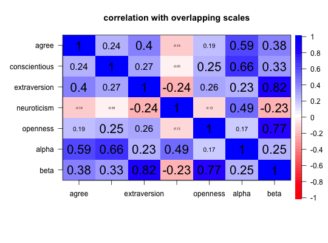
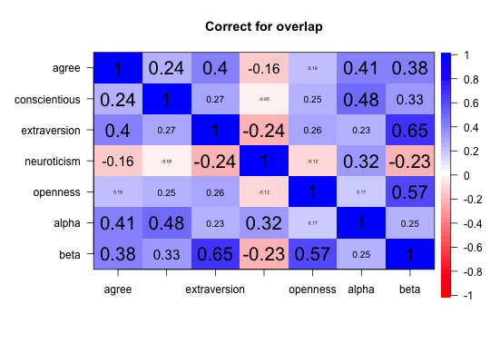

Bootstrapped confidence intervals for raw and composite correlations
Although normal theory provides confidence intervals for correlations, this is particularly problematic with Synthetic Aperture Personality Assessment (SAPA) data where the individual items are Massively Missing at Random. Bootstrapped confidence intervals are found for Pearson, Spearman, Kendall, tetrachoric, or polychoric correlations and for scales made from those correlations.
cor.ci(x, keys = NULL, n.iter = 100, p = 0.05,overlap = FALSE, poly = FALSE, method = "pearson", plot=TRUE,...) corCi(x, keys = NULL, n.iter = 100, p = 0.05,overlap = FALSE, poly = FALSE, method = "pearson", plot=TRUE,...)
Arguments
| x | The raw data |
|---|---|
| keys | If NULL, then the confidence intervals of the raw correlations are found. Otherwise, composite scales are formed from the keys applied to the correlation matrix (in a logic similar to |
| n.iter | The number of iterations to bootstrap over. This will be very slow if using tetrachoric/or polychoric correlations. |
| p | The upper and lower confidence region will include 1-p of the distribution. |
| overlap | If true, the correlation between overlapping scales is corrected for item overlap. |
| poly | if FALSE, then find the correlations using the method specified (defaults to Pearson). If TRUE, the polychoric correlations will be found (slowly). Because the polychoric function uses multicores (if available), and cor.ci does as well, the number of cores used is options("mc.cores")^2. |
| method | "pearson","spearman", "kendall" |
| plot | Show the correlation plot with correlations scaled by the probability values. To show the matrix in terms of the confidence intervals, use |
| ... | Other parameters for axis (e.g., cex.axis to change the font size, srt to rotate the numbers in the plot) |
Details
The original data are and correlations are found. If keys are specified (the normal case), then composite scales based upon the correlations are found and reported. This is the same procedure as done using cluster.cor or scoreItems.
Then, n.iter times, the data are recreated by sampling subjects (rows) with replacement and the correlations (and composite scales) are found again (and again and again). Mean and standard deviations of these values are calculated based upon the Fisher Z transform of the correlations. Summary statistics include the original correlations and their confidence intervals. For those who want the complete set of replications, those are available as an object in the resulting output.
Although particularly useful for SAPA (http://sapa-project.org) type data, this will work for any normal data set as well.
Although the correlations are shown automatically as a cor.plot, it is possible to show the upper and lower confidence intervals by using cor.plot.upperLowerCi. This will also return, invisibly, a matrix for printing with the lower and upper bounds of the correlations shown below and above the diagonal.
Value
The original (composite) correlation matrix.
Mean (Fisher transformed) correlation
Standard deviation of Fisher transformed correlations
Mean +/- alpha/2 of the z scores as well as the alpha/2 and 1-alpha/2 quantiles. These are labeled as lower.emp(ircal), lower.norm(al), upper.norm and upper.emp.
The observed replication values so one can do one's own estimates
References
For SAPA type data, see Revelle, W., Wilt, J., and Rosenthal, A. (2010) Personality and Cognition: The Personality-Cognition Link. In Gruszka, A. and Matthews, G. and Szymura, B. (Eds.) Handbook of Individual Differences in Cognition: Attention, Memory and Executive Control, Springer.
See also
make.keys, cluster.cor, and scoreItems for forming synthetic correlation matrices from composites of item correlations. See scoreOverlap for correcting for item overlap in scales. See also corr.test for standard significance testing of correlation matrices. See also lowerCor for finding and printing correlation matrices, as well as lowerMat for displaying them. Also see cor.plot.upperLowerCi for displaying the confidence intervals graphically.
Examples
cor.ci(bfi[1:200,1:10]) # just the first 10 variables#> Call:corCi(x = x, keys = keys, n.iter = n.iter, p = p, overlap = overlap, #> poly = poly, method = method, plot = plot) #> #> Coefficients and bootstrapped confidence intervals #> A1 A2 A3 A4 A5 C1 C2 C3 C4 C5 #> A1 1.00 #> A2 -0.40 1.00 #> A3 -0.27 0.55 1.00 #> A4 -0.06 0.24 0.33 1.00 #> A5 -0.26 0.43 0.61 0.31 1.00 #> C1 -0.10 0.19 0.15 0.10 0.06 1.00 #> C2 -0.03 0.15 0.12 0.20 0.04 0.49 1.00 #> C3 -0.04 0.17 0.08 0.11 0.07 0.44 0.48 1.00 #> C4 0.14 -0.24 -0.15 -0.10 -0.11 -0.34 -0.34 -0.33 1.00 #> C5 0.08 -0.10 -0.14 -0.12 -0.12 -0.26 -0.22 -0.27 0.41 1.00 #> #> scale correlations and bootstrapped confidence intervals #> lower.emp lower.norm estimate upper.norm upper.emp p #> A1-A2 -0.57 -0.55 -0.40 -0.26 -0.27 0.00 #> A1-A3 -0.41 -0.41 -0.27 -0.14 -0.14 0.00 #> A1-A4 -0.21 -0.21 -0.06 0.08 0.07 0.37 #> A1-A5 -0.42 -0.41 -0.26 -0.12 -0.13 0.00 #> A1-C1 -0.20 -0.21 -0.10 0.02 0.01 0.10 #> A1-C2 -0.17 -0.18 -0.03 0.12 0.14 0.70 #> A1-C3 -0.22 -0.22 -0.04 0.11 0.09 0.52 #> A1-C4 0.02 0.00 0.14 0.29 0.30 0.06 #> A1-C5 -0.02 -0.03 0.08 0.19 0.20 0.16 #> A2-A3 0.46 0.44 0.55 0.66 0.66 0.00 #> A2-A4 0.08 0.09 0.24 0.39 0.39 0.00 #> A2-A5 0.31 0.30 0.43 0.56 0.56 0.00 #> A2-C1 0.03 0.02 0.19 0.35 0.33 0.03 #> A2-C2 0.01 -0.01 0.15 0.31 0.29 0.07 #> A2-C3 0.02 0.00 0.17 0.34 0.36 0.05 #> A2-C4 -0.41 -0.38 -0.24 -0.09 -0.11 0.00 #> A2-C5 -0.23 -0.23 -0.10 0.04 0.02 0.16 #> A3-A4 0.19 0.18 0.33 0.48 0.47 0.00 #> A3-A5 0.52 0.50 0.61 0.70 0.71 0.00 #> A3-C1 0.00 -0.01 0.15 0.29 0.27 0.07 #> A3-C2 -0.02 -0.04 0.12 0.27 0.27 0.13 #> A3-C3 -0.05 -0.08 0.08 0.24 0.25 0.31 #> A3-C4 -0.30 -0.29 -0.15 0.01 -0.01 0.07 #> A3-C5 -0.29 -0.29 -0.14 0.01 0.01 0.06 #> A4-A5 0.19 0.16 0.31 0.44 0.45 0.00 #> A4-C1 -0.02 -0.04 0.10 0.22 0.21 0.18 #> A4-C2 0.06 0.07 0.20 0.33 0.33 0.00 #> A4-C3 0.00 -0.01 0.11 0.23 0.24 0.08 #> A4-C4 -0.23 -0.24 -0.10 0.06 0.05 0.24 #> A4-C5 -0.25 -0.27 -0.12 0.03 0.03 0.12 #> A5-C1 -0.09 -0.11 0.06 0.20 0.19 0.58 #> A5-C2 -0.12 -0.11 0.04 0.18 0.16 0.64 #> A5-C3 -0.06 -0.07 0.07 0.22 0.22 0.32 #> A5-C4 -0.25 -0.25 -0.11 0.05 0.05 0.17 #> A5-C5 -0.23 -0.26 -0.12 0.01 0.01 0.08 #> C1-C2 0.37 0.37 0.49 0.61 0.61 0.00 #> C1-C3 0.32 0.31 0.44 0.57 0.57 0.00 #> C1-C4 -0.49 -0.48 -0.34 -0.18 -0.21 0.00 #> C1-C5 -0.40 -0.40 -0.26 -0.10 -0.10 0.00 #> C2-C3 0.36 0.35 0.48 0.60 0.60 0.00 #> C2-C4 -0.50 -0.49 -0.34 -0.18 -0.20 0.00 #> C2-C5 -0.35 -0.35 -0.22 -0.07 -0.08 0.00 #> C3-C4 -0.48 -0.47 -0.33 -0.21 -0.19 0.00 #> C3-C5 -0.38 -0.40 -0.27 -0.13 -0.13 0.00 #> C4-C5 0.28 0.28 0.41 0.54 0.52 0.00#The keys have overlapping scales keys.list <- list(agree=c("-A1","A2","A3","A4","A5"), conscientious= c("C1", "C2","C3","-C4","-C5"),extraversion=c("-E1","-E2","E3","E4","E5"), neuroticism= c("N1", "N2", "N3","N4","N5"), openness = c("O1","-O2","O3","O4","-O5"), alpha=c("-A1","A2","A3","A4","A5","C1","C2","C3","-C4","-C5","N1","N2","N3","N4","N5"), beta = c("-E1","-E2","E3","E4","E5","O1","-O2","O3","O4","-O5") ) keys <- make.keys(bfi,keys.list) #do not correct for item overlap rci <- cor.ci(bfi[1:200,],keys,n.iter=10,main="correlation with overlapping scales")#also shows the graphic -note the overlap #correct for overlap rci <- cor.ci(bfi[1:200,],keys,overlap=TRUE, n.iter=10,main="Correct for overlap")#show the confidence intervals ci <- cor.plot.upperLowerCi(rci) #to show the upper and lower confidence intervalsci #print the confidence intervals in matrix form#> #> High and low confidence intervals #> agre cnsc extr nrtc opnn alph beta #> agree 1.00 0.33 0.51 -0.24 0.36 0.51 0.52 #> conscientious 0.17 1.00 0.35 -0.23 0.37 0.54 0.41 #> extraversion 0.23 0.13 1.00 -0.34 0.33 0.37 0.70 #> neuroticism -0.04 0.07 -0.08 1.00 -0.23 0.39 -0.35 #> openness -0.01 0.07 0.10 0.00 1.00 0.34 0.65 #> alpha 0.33 0.39 0.04 0.24 -0.04 1.00 0.41 #> beta 0.19 0.18 0.57 -0.08 0.42 0.06 1.00